BroadMoney
Moving money home. BroadMoney processes millions of pounds for families sending money between the UK and Nigeria.
- Role
- Product Designer
- Company
- BroadMoney Payment, UK–Nigeria remittance
- Platforms
- iOS, Android and web
- Result
- First-transfer drop-off 55% → 22%

More than half of new users gave up before they ever sent a pound.
People downloaded the app to send money home. Then they hit the identity checks, and most of them left. For a remittance company, a user who never makes a first transfer is a user you paid for and never earned from.
The checks weren’t the problem. Asking for everything up front was.
I followed new users through the funnel in UXCam and PostHog. The drop came at one moment: a wall of identity checks before anyone had seen the product work. So I asked a different question: how might we let people start small, and verify only when the amount needs it?
Start sending small. Verify more only when you need to.
New users can make a first, small transfer with light checks. ID and a liveness check come in later, at the moment a larger amount makes them necessary, and each step says why it’s being asked.
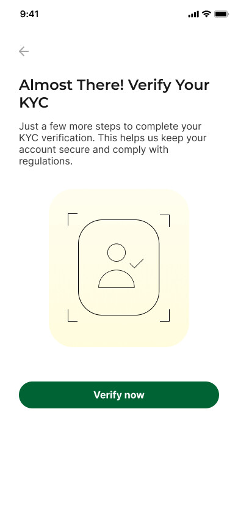
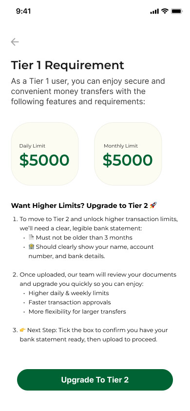
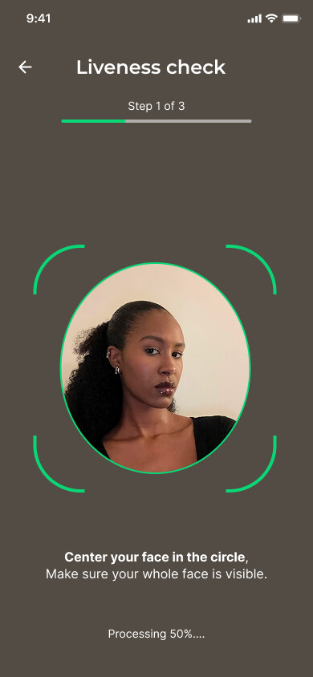
No surprises between “send” and “sent”.
The live rate shows before the amount, then a clear review of exactly what arrives, and a confirmation people can screenshot and share with family.
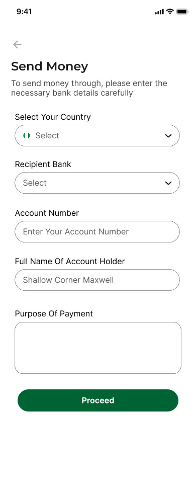
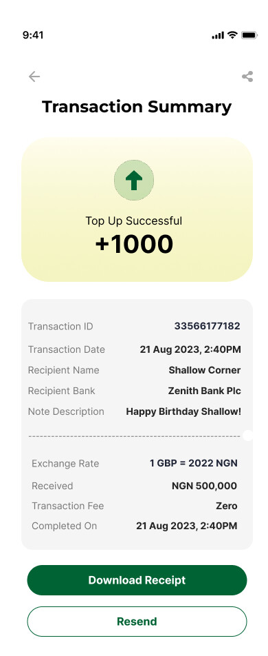
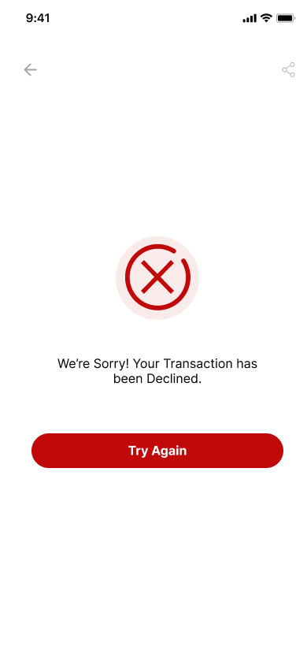
One full-width card per wallet, so the balance is the first thing you see.
Before, large amounts broke the layout and the balance competed with everything else. After, any amount fits and the money comes first.
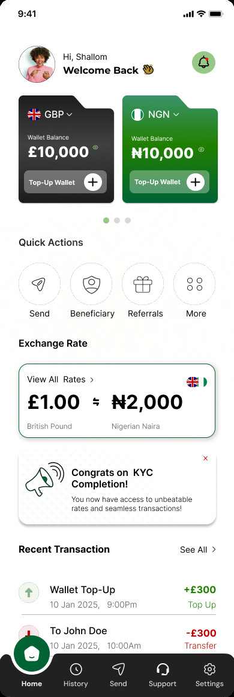
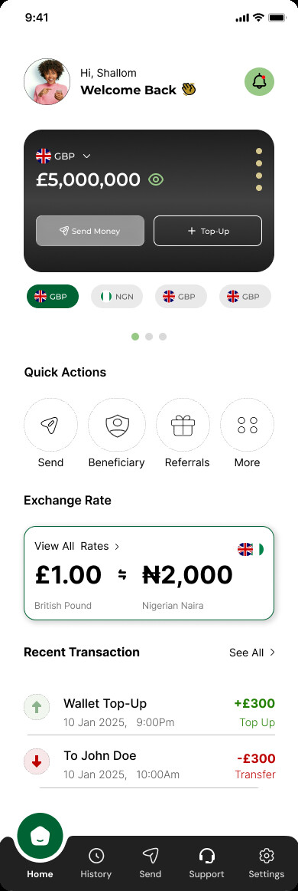
The same product on every screen.
I built the design system from scratch: colour, type, inputs, buttons and states, shared across the mobile apps and the web app, so new flows ship consistent by default.
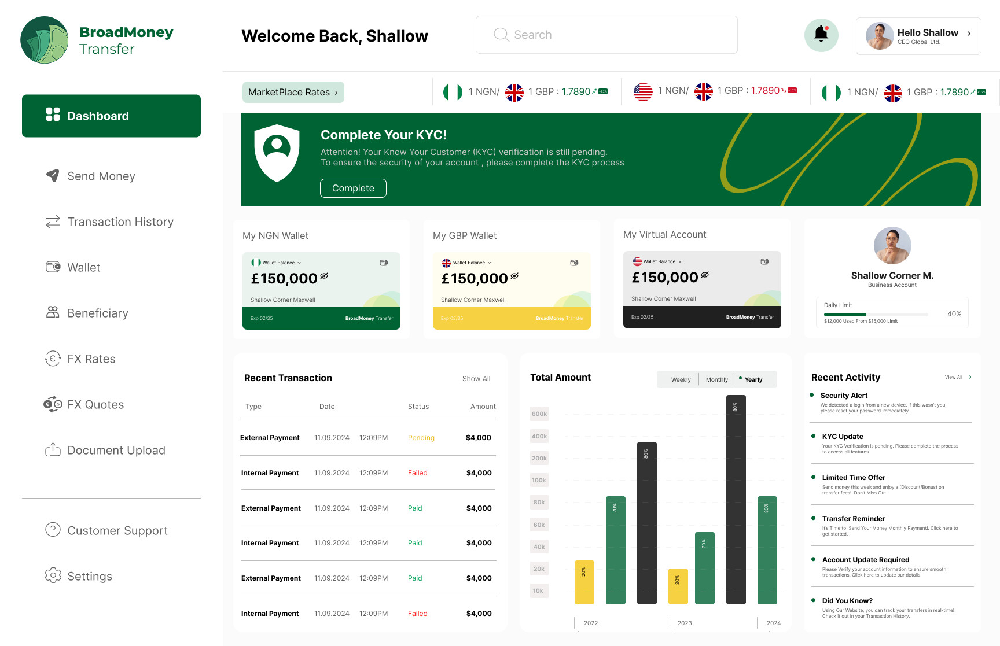
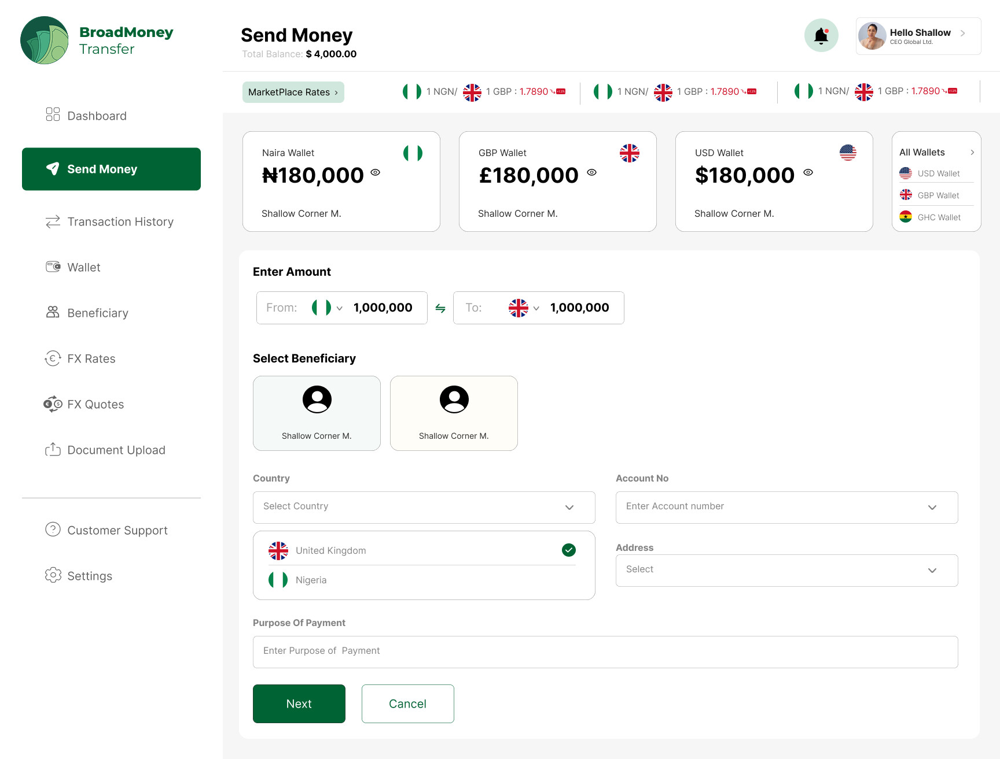
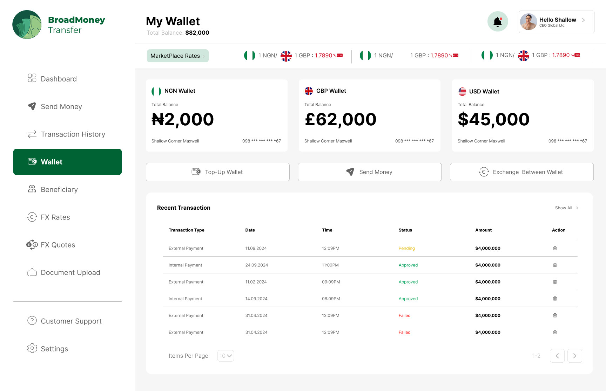
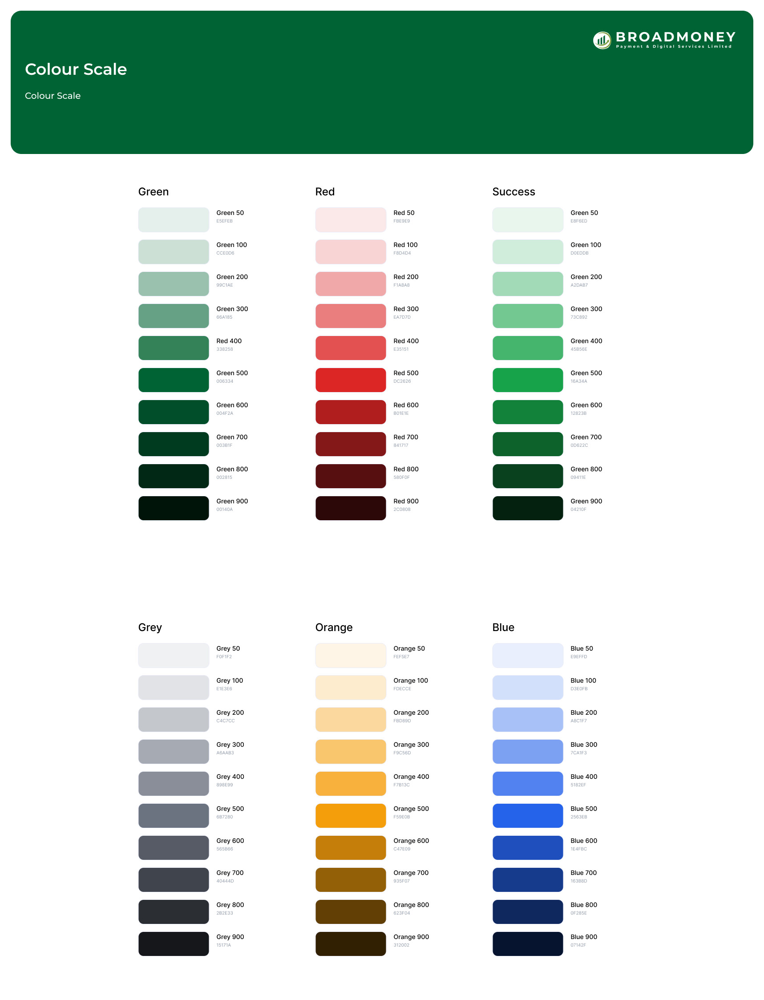
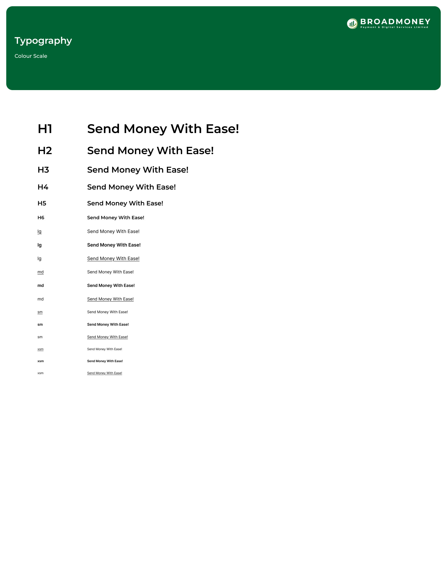
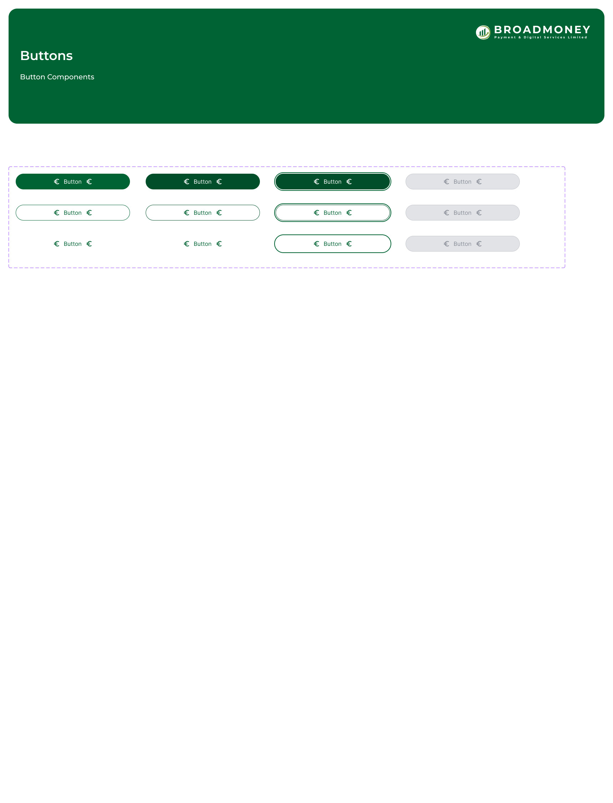
55%→22%
New users made 2.3× as many transactions in their first month.
Measured in UXCam and PostHog on the same funnel, before and after launch.